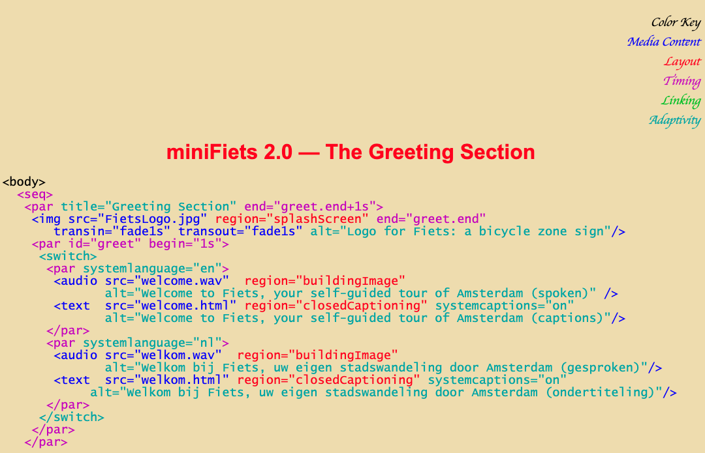

notes
- what are the design goals?
- what are the research challenges?
- media formats = ?
- incl new media
- existing examples to reproduce = ?
- how to augment existing examples = ?
- existing examples of augmenting existing examples = ?
- example breakdowns of existing examples into language = ?
- example recreations/augmentations/remixes of existing examples via the compiler = ?
- communities and people to interview = ?
- how EXISTING languages / approaches work = ?
- manim, idyll, SMIL, the brazilian ones (NCF + G-something), HTML+Time, timesheets
- idyll is for interactive/multimedia W E B D O C U M E N T S
- I am targeting many things that are not necessarily documents, like video
- Rich narrative multimodal media?
- I'm also not trying to do what SMIL is doing... like embedding video, or whatever
- Ginga is so old it was developed FOR TV!!!!!!!! NCL 2010 paper, hell nobody wants to write XML, but omg Clube NCL...
- Ginga-NCL is WAY ahead of its time, geez
- i should just learn Lua
- Oh, also, you can reflow content to target different devices and interaction modalities (i.e. accessibility)—another benefit of the language
- main papers
- Questionnaire
- Sources
- Name
- Creators
- Dates active
- Purpose
- Language features
- Input
- Output
- Limitations
- Ginga / NCL (date?)
- Sources
- Ginga-NCL http://www.iginga.org/files/biblio/2010_06_soares.pdf
- NCL Page tutorials
- http://www.ncl.org.br/en/tutorials
- http://club.ncl.org.br/node/31
- WebNCL https://dl.acm.org/doi/10.1145/2382636.2382719
- NCL Composer http://composer.telemidia.puc-rio.br/doku.php/en/start?redirect=1
- Notes
- SMIL, XHTML + SMIL, HTML + TIME (date?)
- Sources
- SMIL authoring systems
- TTML https://en.wikipedia.org/wiki/Timed_Text_Markup_Language
- SMIL + Time https://homepages.cwi.nl/~jack/presentations/smilstate-for-rwab.pdf
- Retro AF SMIL tutorial https://homepages.cwi.nl/~media/SMIL/Tutorial/SMILTut.html
- timesheets.js http://wam.inrialpes.fr/timesheets/
- https://ics.utc.fr/c2m/res/TimesheetsSoftware.pdf
- SMIL is dead
- Notes
- Synchronized Media Integration Language
- XML-based language for describing multimedia presentations
- Seems to be dead since mid-2000s
- VideoPuppet https://www.videopuppet.com/
- Idyll
- manim
- Examples of multi-media or multimodal alignment
- TEXT/IMAGE/SOUND: math explainer videos / slides
- TEXT/SOUND: music videos / karaoke videos / podcasts
- TEXT/IMAGE: reactive articles (e.g. incremental visualization)
- TEXT/TEXT: subtitles / translation
- TEXT/INTERACTION: What football will look like in the future, "What is code"...
- https://en.wikipedia.org/wiki/17776
- https://www.bloomberg.com/graphics/2015-paul-ford-what-is-code/
- The series was developed by Graham MacAree, who used a Vox Media tool that creates custom packages from standard article sets to give Bois creative leeway and to accommodate the series' weight on the SB Nation website. MacAree found that there were few resources online for achieving the desired effects.[4]
- As of Monday, "17776" had massive reader engagement. Fay Sliger, communications director at Vox Media, said in an email that the project has had more than 2.3 million pageviews since its publication and an average engagement time of more than 9 minutes. About 43 percent of readers — of which more than half are viewing the piece on mobile devices — had finished each installment of the series as of Friday.
- https://web.archive.org/web/20180613014956/https://www.newyorker.com/culture/rabbit-holes/the-experimental-fiction-that-imagines-football-obsessed-americans-in-the-extremely-distant-future
- Input formats
- Output formats
- Video with voiceover
- Print book
- Podcast
- Scrolling/interactive webpage
- (Web) Slides with builds and speaker notes
- Conclusions: Synchronization, alignment, and reference matter! And are hard tasks that can benefit from automation, and free up iteration time. I'm kind of stuck on how to design this language
- In 2016, two friends and I released an opensource tool and wanted to make some nice demos and tutorial videos. When creating videos, I ended up spending most of the time doing things that have nothing to do with the content, but with the boring tasks around synchronisation and alignment.
- useful comment on multimedia in practice from Keenan: "I find myself converting my written text into slides and then into video, but I'm always pointing at stuff (like a subpart of a diagram) in my slides and can't reference it in speech, so then I have to make these very granular builds for the slides, but then I have trouble syncing up what I'm saying to the builds"
- Mildly relevant
- YouTube Timed text editor https://www.youtube.com/timedtext_editor?action_mde_edit_form=1&v=Kas0tIxDvrg&lang=en&bl=vmp&ui=hd&ref=player&tab=captions&ar=1585953093029&o=U
- Video digests http://vis.berkeley.edu/papers/videodigests/videodigests_small.pdf
- Jonathan Corum example http://style.org/tapestry/
- Ways of Hearing: podcast to book https://mitpress.mit.edu/books/ways-hearing
- from slack
- My intuition is that a main research contribution of our work is to systematically study the forms of reference and alignment between different forms of existing multimodal media, produce knowledge about how authors are doing that or want to do that, and propose a high-level language-based way of specifying that in a DDF.
- How do we SYSTEMATICALLY study/code the forms of reference, alignment, juxtaposition between different forms of media?
- How can we scope this DOWN! Maybe just "aligned text"?
- What are existing ways of composing aligned & referenced media?
- "timed text"—the YT editor is pretty slick
- karaoke annotation
- LRC (subtitle file)
- aligned translations
- omg, WHAT??? https://en.wikipedia.org/wiki/Synchronized_Multimedia_Integration_Language
- https://en.wikipedia.org/wiki/Timed_text
- https://en.wikipedia.org/wiki/Timed_Text_Markup_Language
- AUTHORING TOOLS? https://en.wikipedia.org/wiki/Synchronized_Multimedia_Integration_Language#Authoring_tools
- WAIT IT WORKS WITH SVG THOUGH!!
- https://en.wikipedia.org/wiki/HTML%2BTIME
- i truly am a multimedia person...bring it back
- Why are we seeing a resurgence in dynamic media? Or why are we not? Why did SMIL die? What is the difference between multimedia and whatever today is—dynamic media? Hypermedia? Why am I so obsessed with scrollytelling?
- I Guess.... Deep Learning + MOOCs + rise of internet + mainstream "hypermedia" (now it's just media)? 2002 vs 2020. Now we can synthesize speech, now we can automatically caption media and tag visuals in video, things are richer. I mean, it's NYT scrollytelling, doesn't get more mainstream than now
- Like, why isn't Amy Pavel's stuff hypermedia
- Max: Something I want to grapple with personally for this project is the relative importance of encoding existing material into empirically determined primitives vs Reigniting student agency by deconstructing the content that was "flattened" in the first place. The representation in the lecturer's brain will always be richer than the student's, and the best tools reify these representations to play with live
- just thinking out loud some more: I want to steer the tool away from reinforcing the status quo on the student end. Students already are given lectures, videos, slides, and sparse explorables, if the DDF is just a compiler then all it helps are teachers (analogy: end users don't care about clang vs gcc).If the mappings aren't erased after compilation, and students benefit from the richer DDF representation, then we have a medium that's better than existing ones.
- 3b1b videos are awesome, literate tutorials are awesome, and maybe the state of education would be better if we had '''more''' of them, but I do want to explore the richer axis we were brainstorming where the content is less flat
- richer media I'm not 100% sure what is "better" or "more effective" but I do like the aligned content with a rich underlying data structure like the ones we've been collecting
- but really any video, slides, etc which is more hypertext-like: where there's an underlying set of data that renders it and lets you query and interrogate the data semantically through the host medium of video/slides/etc
- like clicking "x" at 5:34 of some khan video and seeing where it appears and maybe a history of its manipulations
- and further (which doesn't really exist anywhere), a bricolage "script" environment where you can see the flattened content in context with all the broader ideas they were pulled from (?)
- Yeah, I like all these ideas, and I do think the idea of compilation makes these new media possible. I think in a paper, it would be great to demo 1-2 of these formats to show the claim that the richer/structure-preserving representation enables new capabilities without much additional work.
- We can repro all these existing diagrams... with these magic features that are enabled by a good design8:37Note that the magic part is more than just a cherry on top of the Penrose paper, it's part of why it's so fundamentally compelling/exciting, and we go to great lengths to show what the system can do that Illustrator can't